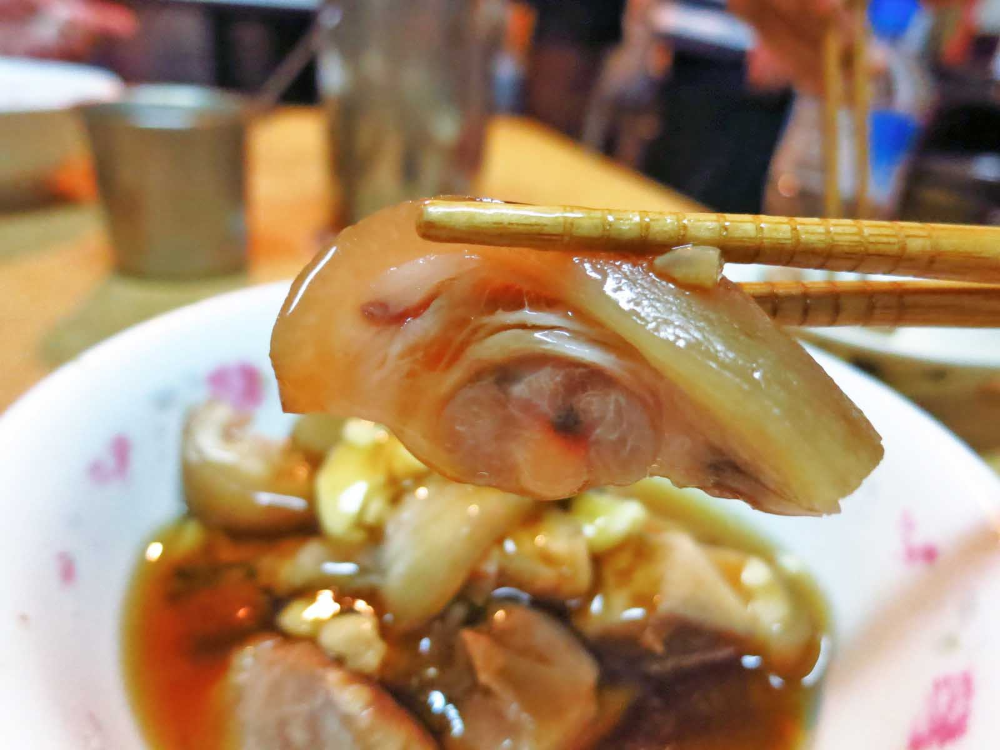
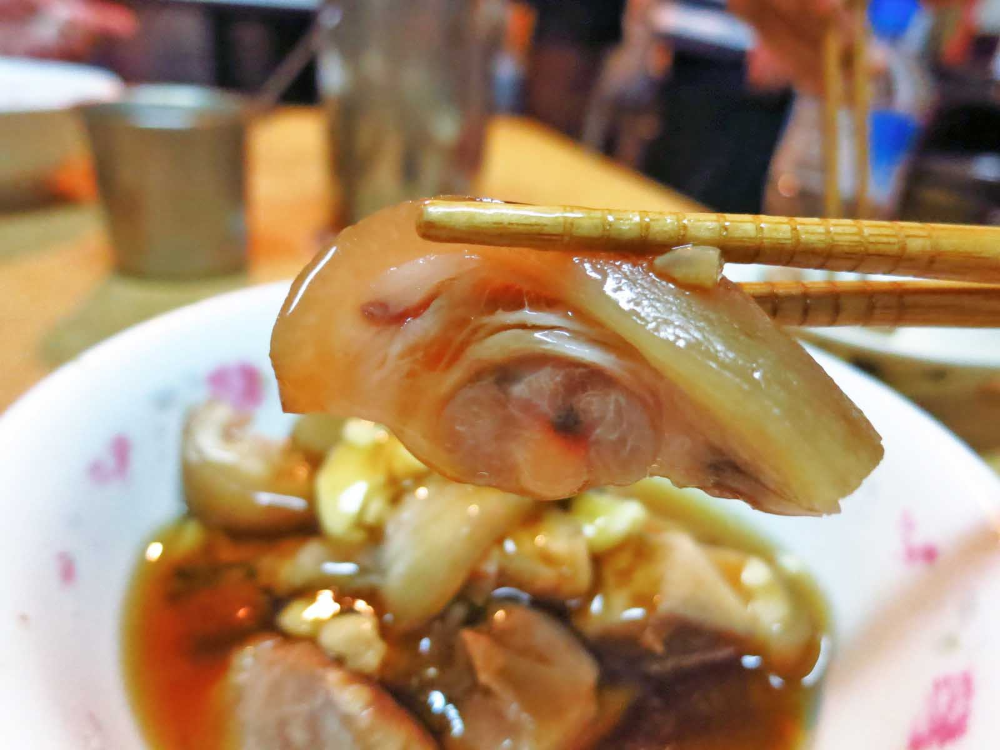

如果不排斥蒜的味道，不妨可以試試，因為它的味道不但不會過於刺激，反而非常的香

我們都認為魚的內臟是苦的，但是在這裡吃到的不但不會有苦的感覺，反而還帶點甘甜，值得一試

如果不考慮價錢的話，個人認為此家的魚皮湯也值得試試，通常大部分的湯喝完都會有口渴的感覺，不過這裡的湯並不會有這種感覺，反而還會有不腥的鮮味，最重要的還是他的魚皮沒有裹漿，薄薄的魚肉細嫩，皮肉間也沒有土腥味，值得試試

說實在的，第一次吃還真的不太敢吃，它的口感非常的軟嫩滑口，完全沒有腥味，再佐以淡淡的中藥香，更令人回味。而且吃起來還真的有一種在吃腦的奇妙感覺，不過如果撇掉這些感覺，其實個人覺得這個是非常值得嘗試的

其實我覺得豬骨髓的味道，就像是融合了濃厚大骨味的豆腐，好吃在於味道濃厚而無腥味，而且阿明豬心的豬骨髓湯還帶著淡淡黃耆的味道，錯過可惜

這裡的豬腳吃起來軟軟的，不過我覺得最厲害的是他們的醬油，稠稠的帶有甘甜的感覺，但唯一的缺點是他的蒜頭味道沒有融入醬油，兩個完全是分開的，所以建議還是搭配豬腳一起吃，如此才有「蒜頭豬腳」的感覺
 


他們的湯頭味道還不錯，但湯不是重點，重點就是在他們的豬心，他們的豬心是現點現切現煮的，豬心的口感非常份量真的很少~